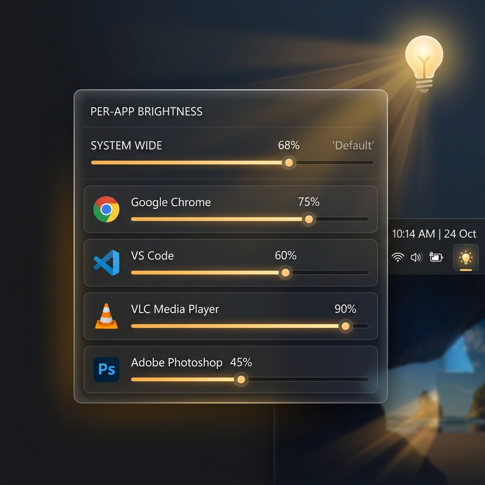
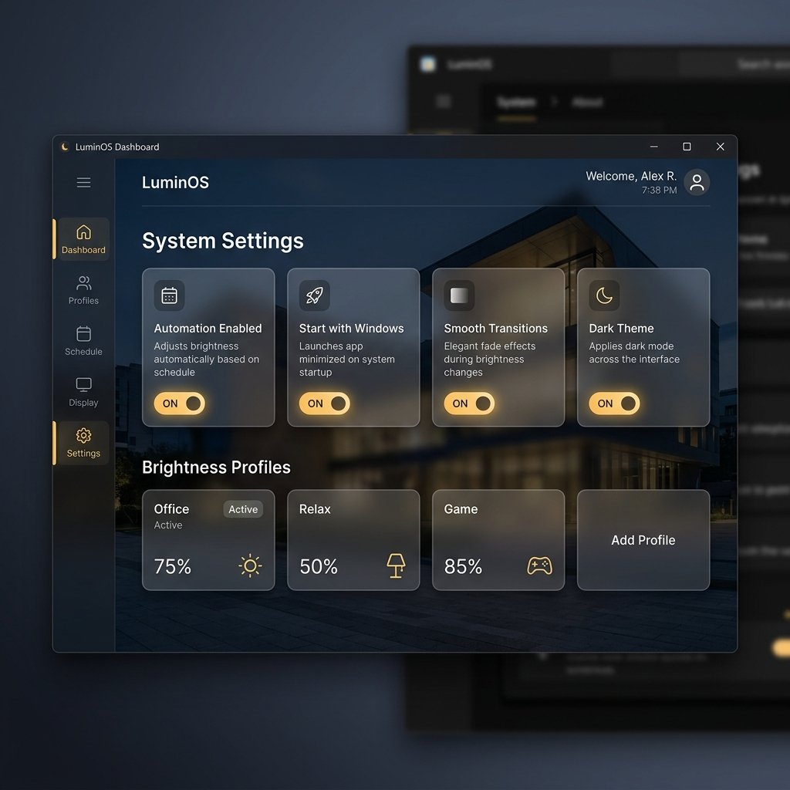
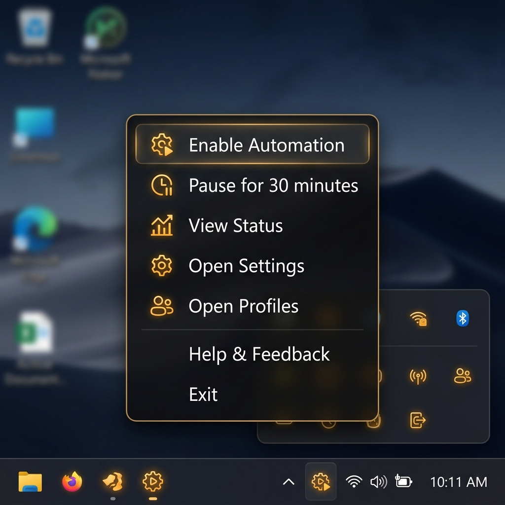

Lumos learns your preferred brightness for every application and restores it seamlessly when you switch. No cloud. No accounts. Just light, exactly where you need it.

Lumos runs silently in your system tray. It observes, learns, and adapts — all without interrupting your workflow.
Lumos watches which application is in the foreground every 300ms using lightweight Windows APIs.
Change your display brightness to whatever feels right. Lumos detects the change and remembers it for that specific app.
Next time you return to that app, Lumos smoothly transitions to your saved brightness level. Automatically.
Watch how Lumos remembers different brightness levels for every app you use.
Every feature exists because it makes your display experience better, without getting in your way.
Brightness profiles are keyed by executable name. Chrome gets 25%, VS Code gets 45%, VLC gets 15% — learned once, applied forever.
Change your brightness manually and Lumos detects it, debounces it, and saves it to the current app's profile automatically.
No jarring brightness jumps. Lumos steps through intermediate levels with configurable smooth interpolation and cancellation support.
No accounts. No cloud sync. No telemetry. All profiles, settings, and logs stay on your machine in %APPDATA%\Lumos.
Runs quietly in the background. Full control from the tray menu — enable, pause, resume, view status, access profiles and settings.
Save and load different brightness profiles as named sets — one for work, one for gaming, one for late-night browsing. Switch instantly.

A clean WPF dashboard puts every setting within reach. Toggle automation, manage startup behavior, fine-tune transition smoothness, and set your preferred theme.

Right-click the tray icon for instant access to every Lumos feature. Pause automation for 30 minutes during a presentation, test brightness control, or quickly forget a learned profile.
Lumos is built on a simple principle: brightness preferences are personal, and they should stay that way.
No sign-up, no login, no registration of any kind.
Zero data collection. Zero analytics. Zero network requests.
Profiles and settings stored as plain JSON in %APPDATA%.
If a config file is corrupted, Lumos safely moves it aside and starts fresh.
Download the installer, run it, and Lumos starts working in your system tray. No setup wizard, no configuration needed.